我们介绍 MiniMax-M2 系列，这是一组 MoE 语言模型，其设计围绕这样一个原则：极少的激活参数能够释放最大的现实世界智能。旗舰模型 M2 总参数为 229.9B，每个 token 仅激活 9.8B 参数。M2 系列从头到尾面向 agent 部署设计，建立在三个组成部分之上：（i）由 agent 驱动的数据流水线，在 agent 编程与 agent 协作工作中生成大规模、可验证的轨迹，每条轨迹均以可执行的工作空间和与产物对齐的奖励为基础；（ii）Forge，一套可扩展、原生面向 agent 的 RL 系统，能够适应长时程 agent 轨迹，并结合窗口化 FIFO 调度、前缀树合并、推理优化，以及清晰的训练—推理—agent 解耦，同时支持白盒与黑盒 agent；（iii）最新的 M2.7 checkpoint 朝自我演化迈出早期一步，能够自主调试训练运行并修改自身的 scaffold。从 M2 到 M2.7，这一组合将极少激活参数的开销转化为 agent 编程、深度搜索、办公任务和推理基准上的前沿水平性能。
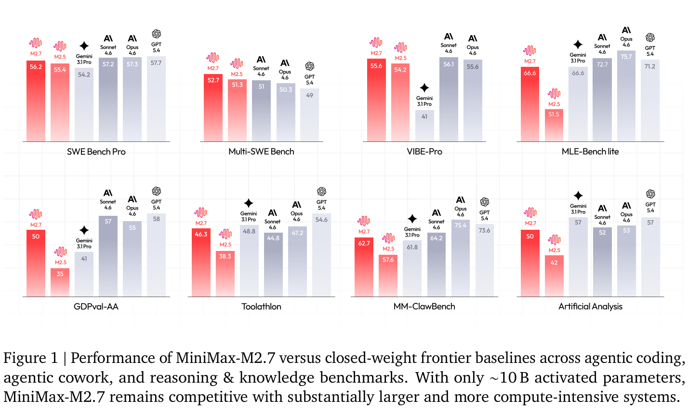
1通信请发送至 model@minimax.io。
大语言模型正迅速从简短的单轮对话迁移到长时程 agent 工作流：编写并交付生产代码、浏览开放网络、操作异构工具，以及在数百个交错的推理与行动步骤中生成结构化办公产物（Anthropic, 2025; Google DeepMind, 2025; OpenAI, 2025）。这一转变暴露出两种不同的困难。首先，agent 任务内在的超长上下文在训练与推理过程中都带来了严峻的效率和成本瓶颈，在大规模、高可用生产部署的严格要求下尤其如此。其次，在真实环境中的部署要求解决本质上复杂且影响重大的任务，例如生产级软件工程和知识密集型办公自动化。
为应对这两项挑战，我们介绍 MiniMax-M2 系列，这是一组围绕单一设计原则构建的 MoE 语言模型：极少激活参数能够释放最大的现实世界智能。旗舰 M2 是一个含 62 层的 decoder-only transformer，总参数为 229.9B，每个 token 仅激活 9.8B 参数；它采用 256 个细粒度专家（Dai et al., 2024）、sigmoid 门控、配合 GQA 的全多头 attention（Ainslie et al., 2023）、192K token 原生上下文窗口，以及一个多 token 预测（MTP）模块（DeepSeek-AI, 2024; Gloeckle et al., 2024），后者在推理时也充当 speculative decoding 的草稿路径（Leviathan et al., 2023）。在 29.2T token 上的预训练奠定了基础；此后，M2 的大部分现实世界能力由原生面向 agent 的后训练流水线构建，其中各个组件从 M2 经 M2.5 到最新的 M2.7 协同演进。
主要贡献。MiniMax-M2 系列能力的持续演进和性能提升，主要来自以下技术创新：
结果。图 1 展示了 MiniMax-M2.7 在三个能力领域的主要指标。在 agent 编程方面，M2.7 在 SWE-bench Pro 上达到 56.2，在 SWE-bench Multilingual 上达到 76.5，在 Multi-SWE-bench 上达到 52.7，在 Terminal-Bench 2.0 上达到 57.0。在 agent 协作工作方面，它在 MM Claw 上达到 62.7，在 BrowseComp 上达到 77.8，在 GDPval-AA 上达到 50.0，在 Toolathlon 上达到 46.3。在推理与知识方面，
（接上页）M2.7 在 AIME 2026 上取得 94.2，在 GPQA-Diamond 上取得 89.8。MiniMax-M2.7 仅激活约 10B 参数，却接近最强闭源前沿系统的性能。完整基准集、各基准分析和系列内演进情况见第 8 节。
M2 是基于 MoE 架构的大规模稀疏语言模型，旨在扩大模型容量，同时保持较低的单 token 计算预算。它含 229.9B 总参数，每个 token 激活 9.8B。模型采用 62 层 decoder-only transformer，隐藏维度为 3,072，词表大小为 200,064，并在 29.2T token 上进行预训练，最大上下文长度为 192K。
M2 的每个 transformer block 由一个多头 self-attention 模块及其后的 MoE 前馈层组成。在 attention 方面，M2 的所有层均采用全多头 attention，使用 48 个 query 头与 8 个 key-value 头（GQA）（Ainslie et al., 2023）。旋转位置 embedding（RoPE）（Su et al., 2024）应用于整个模型。这一设计不同于 MiniMax-Text-01（MiniMax, 2025b）中探索的混合 attention 机制，体现了我们在大规模设置下对全 attention 的偏好（第 2.2.2 节）。MoE 前馈层包含 256 个细粒度专家（Dai et al., 2024），每个 token 激活 8 个专家。路由采用 sigmoid 门控，并引入可学习的专家专属偏置项，从而改善负载均衡，同时大幅减少对辅助 loss 的依赖（Wang et al., 2024a）（第 2.2.1 节）。除标准的下一 token 预测目标外，我们还在预训练期间加入多 token 预测（MTP）模块（Gloeckle et al., 2024）。在持续预训练期间，该模块通过权重复制得到扩展，以支持多步 speculative decoding（Leviathan et al., 2023）（第 2.3 节）。
M2 的设计空间主要由两个架构决策决定：如何使前馈层稀疏化，以及如何在各层组织 attention。每项决策均通过有针对性地与替代方案进行基准比较作出，下面详述其理由和支撑证据。
M2 的前馈层使用 MoE 架构，并作出三项修改，分别针对表达能力、路由动态和负载均衡。
细粒度专家。我们采用细粒度专家设计，使用数量更多、规模更小的专家，在增加专家总数的同时减小每个专家的 FFN 尺寸。这提高了路由组合的多样性，并降低不同设备之间专家使用率的方差（表 1）。
Sigmoid 门控。我们采用 sigmoid 门控进行专家路由，替代基于 softmax 的 top-\(k\) 门控（Shazeer et al., 2017）。每个专家获得独立的激活分数，消除了 softmax 引入的零和约束。这允许多个专家同时以高置信度激活，并使训练过程中的路由动态更平滑。
专家偏置。我们在门控函数中引入可学习的偏置项，作为各专家路由分数的偏移。这些偏置与模型参数共同优化，并隐式调节专家
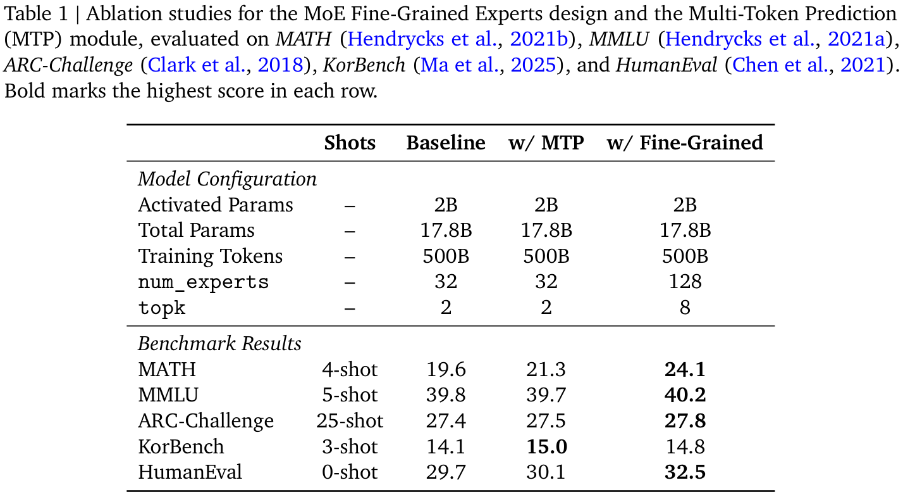
（接上页）使用率，从而允许大幅降低辅助负载均衡 loss。
M2 在所有层采用全多头 attention，不再沿用 MiniMax-Text-01（MiniMax, 2025b）将 Lightning Attention（Qin et al., 2024）与全 attention 交错排列的混合设计。尽管高效 attention 机制在理论上很有吸引力，我们仍未发现任何变体能够在覆盖推理、编程和 agent 任务的生产环境中稳定地达到全 attention 的质量。
评估困难。核心挑战是可靠测量质量损失。在 MiniMax-Text-01 开发过程中，我们的混合 attention 模型在标准基准（MMLU（Hendrycks et al., 2021a）、BBH（Suzgun et al., 2023）、MATH（Hendrycks et al., 2021b）、LongBench（Bai et al., 2024））上似乎与全 attention 相当，但在更大规模下，复杂多跳推理中出现了明显缺陷。我们开发了代理指标来弥补这些不足，但代理指标与真实下游性能之间的相关性很脆弱，在更大规模或未见过的任务分布上可能不再成立。此外，获得统计显著的评估结果所需计算量会随任务复杂度大幅增长，而不同架构与数据分布和训练配方之间的相互作用难以预测，使可靠比较异常困难。
基础设施差距。线性和稀疏 attention 的基础设施仍不如全 attention 成熟。许多线性架构即使在训练期间也受内存带宽限制。推理方面仍存在关键挑战：对低精度存储敏感、缺乏原生前缀缓存支持，以及与 speculative decoding 的集成方式不明确。
混合 SWA 实验。我们对 M2 的 attention 层广泛探索了混合滑动窗口 attention（Beltagy et al., 2020）变体，在多种配置下持续预训练数千亿至数万亿 token：改变 SWA 与全 attention 的比例、调整 RoPE 设置、探索层内与层间混合、分析 attention 模式（induction heads（Olsson et al., 2022）、retrieval heads（Wu et al., 2024）），以及加入 sink token（Xiao et al., 2024）。在预训练
（接上页）期间，所有变体在检索、多跳推理和上下文学习任务上的性能均出现下降（表 2）。经过 SFT 后，差距在长上下文场景下尤其明显：在上下文超过 32K 的基准（agent 任务和复杂长上下文评估）上，SWA 变体显著弱于全 attention。在上下文不超过 32K 的基准上，差异有好有坏，绝对值也较小；SWA 在一些指令遵循和较短时程 agent 任务上（例如 IFBench、XBench-ds）达到甚至超过全 attention，而全 attention 在知识密集型评估中（例如 GPQA-Diamond、MMLU-Pro）仍保持优势；见表 3。这些发现表明，混合 SWA 的 attention 覆盖范围限制对长上下文能力有关键影响，而对短上下文场景影响很小。
展望。随着上下文长度增长和 GPU 算力扩展放缓，次二次复杂度 attention 将变得越来越重要。我们正在投入更好的长上下文数据、评估方法和基础设施，以促成这一转变。
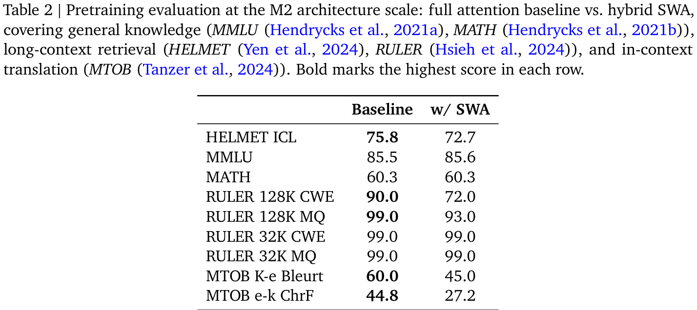
M2 引入多 token 预测（MTP）（Gloeckle et al., 2024），训练模型联合预测接下来的 \(K\) 个 token。这一设计提供更丰富的训练信号，并支持在推理时进行 speculative decoding（Leviathan et al., 2023）。
预训练阶段。在预训练期间，M2 遵循 DeepSeek-V3（DeepSeek-AI, 2024）的设计（图 2），使用单个 MTP 模块（\(K=1\)）训练，MTP loss 初始权重为 0.3，在衰减阶段退火到 0.1。如表 1 所示，消融研究表明 MTP 在各个基准上持续改善模型性能，在重推理任务上增益最大。
通过权重复制扩展。为支持多步 speculative decoding，我们在持续预训练的衰减阶段将 MTP 模块从一个扩展为三个（\(K=3\)）。我们通过复制主模型权重来初始化 MTP 模块，而不采用随机初始化。这一策略很关键，原因有二：（1）复制初始化的模块收敛显著快于随机初始化模块，后者初始 loss 较高，会暂时降低主模型质量；（2）它最大程度降低过渡期间对主模型表征的扰动。扩展后，我们先冻结主模型，仅训练 MTP 模块一小段时间直到其 loss 稳定，然后转为所有模块联合训练。我们还探索过始终冻结主模型，
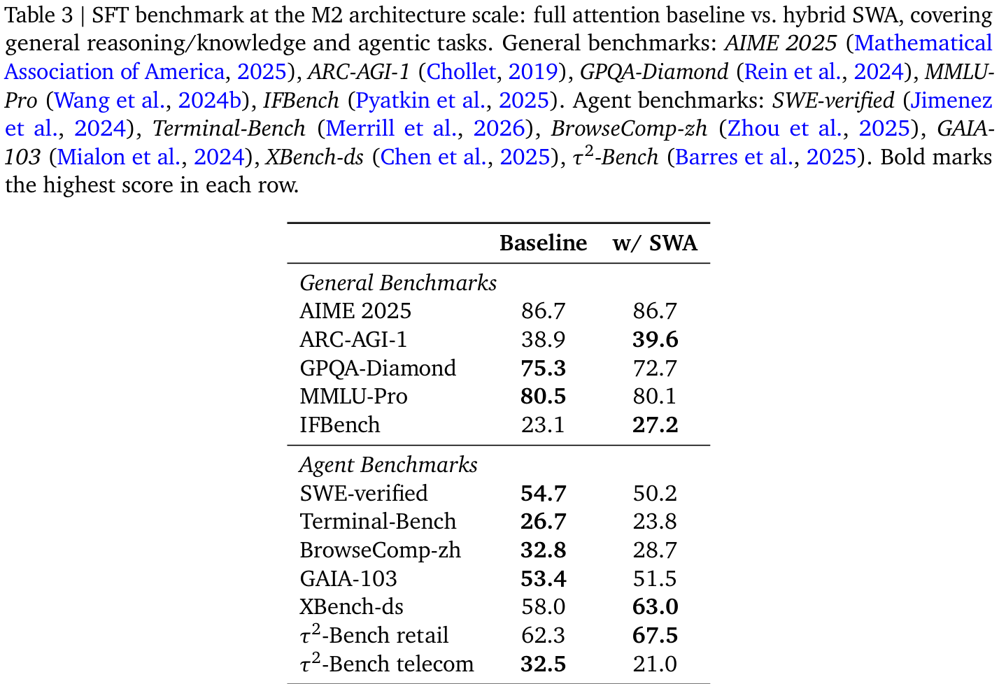
（接上页）但发现仅训练 MTP 的方案最终模块质量比联合训练更差。
推理。推理时，三个 MTP 模块生成草稿 token，由主模型在一次前向传播中验证，在保持与标准自回归 decoding 完全相同的输出质量的同时提高吞吐量。
训练数据。预训练语料包含全面且经过精心筛选的数据集，融合网页文档、学术文献、书籍、编程代码以及结构化问答内容等多样化来源。我们结合基于模型的奖励评分与辅助分类器，从多个维度评估文档质量，并采用平衡采样策略，提高高质量内容的权重，同时保留充足的类别多样性。
数据分布。预训练数据混合在各领域之间精心平衡，代码、数学和 STEM 内容相对于其自然分布显著提高采样比例。其余部分由通用网页内容、书籍及其他领域数据构成，确保世界知识和语言多样性得到广泛覆盖。在预训练的恒定阶段，我们总共训练了 19.9T token。
长上下文扩展。初始预训练阶段之后，我们采用多阶段训练程序，将模型上下文窗口从 8K token 逐步扩展至 32K，最终达到 192K token。衰减阶段总数据预算为 9.3T token，包含
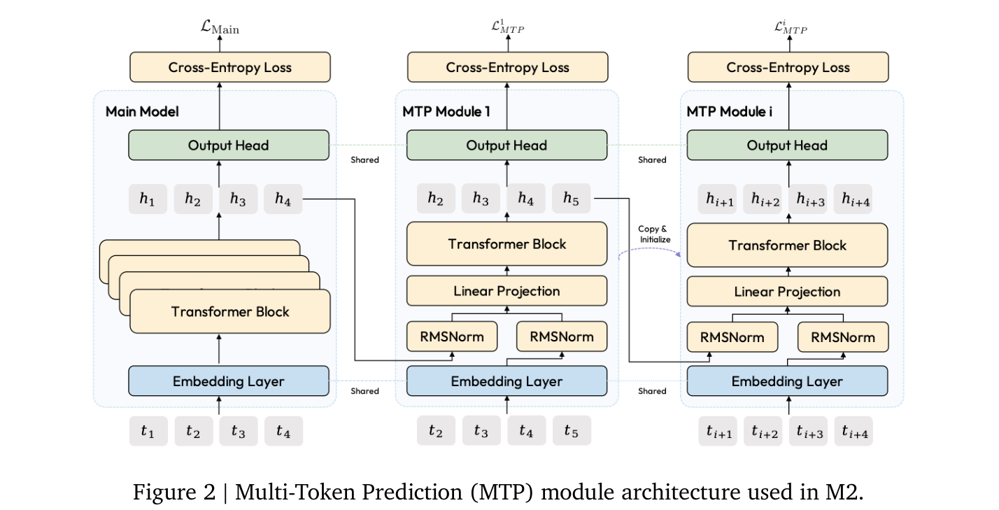
（接上页）短文本衰减数据和长上下文数据，其中高质量代码拼接、天然长篇 PDF 文档以及主题相关的文档打包，是长上下文训练样本的主要来源。在衰减阶段，我们混入高质量数据，在扩展有效上下文长度的同时巩固模型能力。
我们从软件工程（SWE）、应用开发（AppDev）以及终端交互任务这三个互补领域收集 agent 编程的后训练数据，覆盖仓库级代码演进、全栈开发与交互式终端环境。
为编程 agent 构建训练数据存在三个相互关联的挑战：实现广泛的任务多样性、确保客观可验证性，以及扩展到大规模训练所需的数据量。GitHub 是收集此类数据的丰富且天然结构化的来源：结构良好的 pull request 包含描述、相关代码修改以及提供客观正确性信号的测试用例。但原始 PR 数据本身噪声很大，不能直接使用，因此我们构建了真实数据驱动的 SWE-scaling 流水线：这是一条基于原始 GitHub 数据、由 agent 驱动的自动化数据流水线，用于生成多样、可验证的 SWE 风格数据集与环境。具体而言，该流水线依次执行以下六个阶段。
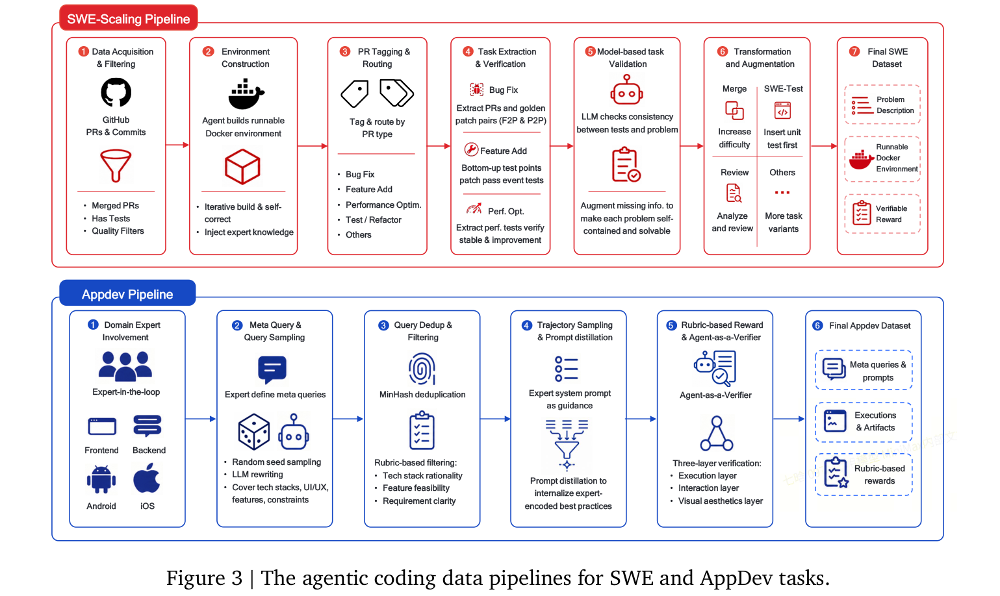
（接上页）为每个 PR 构建可运行的 Docker 环境。然而我们发现，由于异构依赖和版本冲突，非 Python 场景中的环境合成可靠性较低。为此，我们引入融合专家知识、由 agent 驱动的执行循环，根据执行反馈迭代生成并完善构建脚本。我们处理的关键维度如下：
（接上页）P2P 测试验证正确性。P2P 测试对于确保修复过程中未引入新 bug 尤其重要。
SWE-scaling 流水线最终生成大规模训练数据集，每个实例由问题描述、基于测试的可验证奖励和可运行 Docker 环境组成。对于 M2 系列模型，该流水线涵盖十余种编程语言和广泛的编程任务类别。
SWE 任务专注于修改现有仓库，例如修复 bug、添加功能和重构；应用开发（AppDev）任务则要求从零构建完整应用。这带来了不同挑战：任务无法直接从现有代码库提取，质量信号需要超出静态分析的运行时验证，评估标准同时涉及功能正确性与主观设计质量。为应对这些挑战，我们设计了专家参与的数据流水线，将领域专业知识与大规模自动验证结合。领域专家提供编码生产级技术模式的元查询，编写指导轨迹生成的系统提示词，并设计涵盖执行、交互与美观的评估量规。随后，Agent-as-a-Verifier（AaaV，作为验证器的 agent）框架将生成应用部署到沙盒环境，通过工具辅助交互按专家定义量规验证，执行自动拒绝采样。这条流水线使我们能够在前端、后端、移动端、桌面端和仿真等多个领域合成多样、高质量的应用开发轨迹。
专家参与的查询合成。我们结合专家设计的元查询和自动质量控制，合成多样、高质量的开发任务查询。工程团队的领域专家提供经过优化、编码领域知识的元查询。每个元查询作为捕捉核心技术模式的模板，规定框架生态（例如 React + Zustand + Tailwind）、架构约束以及基于生产经验的真实用例。专家整理各类别的种子池，涵盖 UI 组件库、CSS 框架、构建工具、SaaS 集成与常见应用场景。这些元查询引入受控变化：从专家整理的分布中采样技术栈、样式方法和功能要求，以确保多样性及技术有效性。元查询依据下游质量信号反复完善，专家因此可以去除持续产生低质量输出的模式，增强能够生成结构良好开发任务的模式。
我们将元查询与随机采样的种子组合，再以高温度通过 LLM 生成处理，最大程度增加变化，合成多样的用户查询。每个元查询扩展成多个具体查询，描述特定开发任务，覆盖功能要求、技术选择和 UI/UX 规范。为控制冗余，我们应用基于 MinHash 的去重，以线性时间和可配置阈值实现近似近重复检测。最后，我们使用 LLM-as-a-Judge 按领域专属量规评估每个查询的质量，量规分为三类：技术栈合理性（兼容性、选择适当性、组合有效性）、功能可行性（技术可实现性、描述具体程度、UI/UX 逻辑）和需求清晰度（有效性、场景真实性、表述连贯性、完整性）。得分低于特定阈值的查询被拒绝。这确保只有形式规范、技术可靠、范围切合实际的开发任务进入轨迹采样。
使用专家系统提示词的轨迹采样。领域专家通过精心设计的系统提示词，直接向生成过程注入先验知识。这些提示词编码最佳实践，以解决早期模型中的已知缺陷。例如，在网页前端任务中，专家发现模型存在不理想的设计习惯，如过度使用模板式渐变背景。为抑制这些倾向，系统提示词明确规定设计指导和质量标准，涵盖功能完整性、代码完整性、内容真实性和美观。除设计指导外，提示词还鼓励开发过程中的最佳实践：先编写规范再实现、为复杂任务维护结构化 TODO 列表，以及通过测试自我验证。我们还专门收集针对 skill 使用与内化的轨迹，使模型学习何时以及如何有效使用 skill。我们方法的关键要素是提示词蒸馏：轨迹采样期间，模型获得完整、丰富的系统提示词；训练时，我们有选择地移除其中部分指导。这种部分不对称鼓励模型将专家编码的最佳实践内化为默认行为，减少推理时对显式提示的依赖。
采用基于量规奖励与 Agent-as-a-Verifier 的拒绝采样。与测试用例提供天然正确性信号的 SWE 任务不同，应用开发需要跨多个维度的整体评估，不能仅靠静态代码分析完成。我们利用 Agent-as-a-Verifier（AaaV）解决这一问题：该框架将生成应用部署至沙盒环境，通过工具辅助交互评估并验证轨迹。评估按三个层次进行，每项标准均要求提供证据，并给出二元通过/失败判断：
（接上页）文件存在性和语法有效性、依赖解析与可安装性、构建成功与服务器初始化、HTTP 状态，以及页面加载时不存在 JavaScript 错误。未通过这一层的轨迹立即被拒绝，因为它们代表无法正常工作的输出。
各层的总体通过率作为拒绝采样的奖励信号，其中执行层检查作为立即拒绝的硬门槛。这种三层评估使 AaaV 区别于传统 LLM-as-a-Judge 方法：验证器 agent 并非根据静态代码或截图评估质量，而是跨多轮主动与运行中的应用交互，按专家定义量规为观察到的行为评分。关键在于，我们严格筛选的多样查询分布与这种 Agent-as-a-Verifier 评估范式相互配合，为后续强化学习建立稳健基础，同时提供丰富的探索空间与可靠、以环境为依据的奖励信号。
除 SWE-bench（Jimenez et al., 2024）外，Terminal-Bench（Merrill et al., 2026）在功能完整的终端环境中，以真实而复杂的任务评估 agent，对 LLM 的系统操作、调试和命令行能力提出显著更高要求。为提升模型在这些能力上的表现，我们提出 Terminal-Gym，一条自动数据合成流水线，系统地将精心整理的真实编程场景转化为多样、可验证的终端任务语料。它通过生成结构化任务 schema、动态演进查询难度，以及自动合成稳健的 Docker 运行环境，为终端 agent 提供高度可扩展的训练框架。
种子数据集选择。Terminal-Gym 以完整 Stack Overflow 数据集为基础，后者大规模提供高质量真实编程与系统操作场景。在按时间顺序整理原始数据、重建完整帖子后，我们应用严格的规则筛选。我们丢弃没有已接受答案的帖子、低分帖子以及过长的问答对。为严格聚焦终端场景，我们按标签筛选，仅保留与终端操作、系统配置、调试、脚本及相关软件工程工作流有关的讨论。随后为每个保留帖子标注多个属性，包括问题质量、任务类型适用性、可验证性、任务类别、近似复杂度、环境要求和执行特征。我们仅选择符合严格条件的帖子：必须可脚本化、兼容终端、可验证、与 Linux/Docker 有关，且难度适中。最后，丢弃各讨论串中的噪声或冗余内容，选择一个高质量答案，形成基础问答对。
查询合成。我们进一步将选定查询改写为结构化任务描述。这需要明确执行上下文，包括必要环境、所需工具、预期输入输出格式以及成功标准。随后，根据可测试性、完整性与清晰度，将改写后的任务分为四档，仅保留前两档任务。原始问答对由此转化为结构化 schema，包含自然语言指令、必要的辅助文件或脚本，以及预期终端行为的简明描述。
合成流水线。每个结构化 schema 通过三个阶段转化为完整终端任务。
最终，Terminal-Gym 为复杂终端操作提供高度可扩展的训练框架，我们正将这一基础演进为无需干预的 Anything2Docker 系统。此外，考虑到代码安全日益重要，我们正在进一步扩展 CVE-Factory（Luo et al., 2026），使其涵盖更广泛的自主网络安全研究前沿，拓展 AI 驱动的漏洞分析与主动防御机制边界。
除编程与终端任务中的可验证信号外，现实部署还需要 agent 能够跨异构专业环境工作：浏览开放网络获取一手来源、围绕金融电子表格进行推理、编写演示文稿，以及生成终端用户实际使用的更广泛办公产物。Agent 协作工作是支撑这些能力的数据收集路线，分为四个领域：深度搜索与开放网络研究、知识工作者办公任务、金融分析与电子表格操作，以及幻灯片生成。虽然各领域操作不同工作空间并生成不同产物，但四者均遵循相同的整体设计。任务在真实、可运行的工作空间中实例化；在有意扰动的 scaffold 下，从轮换使用的一组强教师模型中蒸馏轨迹；接纳与否由与产物格式对齐的验证信号决定，而非单一通用评判器。对于结果无法直接机器验证的子任务，我们收集多个候选回答，并沿两个维度——推理与行动轨迹以及最终产物——进行成对比较后选择，再通过基于量规的筛选，执行严格的准确性与质量门槛。下面描述各领域如何实例化这一共用流水线。
此领域针对要求 agent 浏览开放网络、跨多个来源搜集证据并综合生成有依据答案的任务。为大规模生成这类任务，我们采用引导与改写合成策略。从种子问题出发，我们迭代改写问题，
（接上页）并模糊它所依赖的实体，直到任务足够困难，能够区分强弱 agent。这一过程让我们可以持续控制任务难度：简单变体锻炼基本检索，更难的变体要求深入、多步浏览和跨来源相互印证。为防止模型学习编造貌似可信的答案，每项合成任务还配有明确的证据规范，仅当采样轨迹的答案以实际检索到的证据为依据、而非复述模型记忆时，才予以接纳。对于更宽泛、报告式且不存在唯一简短答案的查询，我们用基于量规的评判器取代精确匹配接纳机制，按事实准确性、透明度、不确定性处理和风险披露评分。轨迹从轮换使用的一组强教师模型蒸馏，外围 scaffold 在不同运行中扰动，使所得策略能够泛化到单一工具布局之外。
此领域涵盖知识工作者在日常工作中生成的广泛端到端专业交付物：报告、幻灯片、备忘录、结构化文档。我们以成熟办公任务基准 GDPval（Patwardhan et al., 2025）为语料锚点，并通过模拟真实专业人员工作组织方式的合成流水线扩展它。
种子筛选。我们首先从种子基准的典型任务中筛选可用子集，过滤超出 agent 运行框架支持范围的条目，使种子部分为其余语料提供干净、可执行的锚点。
分层合成。在此锚点上，我们通过分层、多阶段程序生成更大的自合成语料。从公共职业数据库中的宽泛职业类别开始，派生融合文化和地域多样性的细分领域，确保广泛覆盖不同行业、地域与文化环境。对于每个细分领域，我们生成具体任务及详细任务描述，模拟真实工作场景，使数据植根于真实专业活动，而非抽象或通用指令。对于每项任务，我们进一步生成包含辅助文档的真实工作空间，以及多个具有不同具体程度的查询版本，将高层任务描述转化为具体、可执行的问题设置，并让模型接触一系列不同用户表述风格。每项任务还附带预期交付物的结构化规范，使合成、执行和接纳共享相同产物格式。
多维度量规接纳。接纳机制由涵盖正面行为、负面行为、关键错误、地域适当性和推理深度的多维度量规决定，统一应用于种子部分和自合成部分。类型化清理步骤进一步移除编造数据、参考文献或实体的轨迹，使最终语料仅保留符合严格事实标准的产物。
此领域涵盖两类互补任务，合起来覆盖金融专业人员的日常工作：以真实金融工具为依据的金融信息检索、计算与推理，以及针对真实工作簿的电子表格操作。两类任务由不同任务合成流水线构建，但共享相同的下游接纳与 scaffold 机制。
证据驱动的合成。对于第一类任务，我们采用早期工作（Chen et al., 2026）中介绍的证据驱动任务合成流水线，反转传统自上而下的编写顺序：先执行真实金融工具，收集有依据的执行轨迹，然后反向推导严格由这些轨迹蕴含的任务。这使依据性在构建时得到保证：每项任务按设计均
（接上页）可以通过可观察的工具输出执行和验证，参考答案完全由工具实际返回内容决定。
工作簿遍历合成。对于第二类任务，我们采用工作簿遍历构建语料，借鉴如 Liu et al.（2025b）等轨迹驱动合成方法的思路。agent 对种子工作簿运行精心整理的一组原子电子表格操作，将经过的中间状态回收为新种子，并在每条生成轨迹上按反向顺序合成任务：从轨迹推导答案，再从答案推导问题。最后一个步骤沿措辞与难度维度丰富所得问题池。
覆盖范围。第一类针对答案必须依据外部金融数据的检索、计算与推理问题。第二类涵盖三条子路线：涉及工作簿结构理解、公式应用和跨表操作的通用及竞赛级电子表格处理；涵盖典型 PE、VC 和 M&A 场景的金融建模；以及从半结构化源文档重建结构化工作簿。
接纳。接纳机制优先采用确定性的数值级匹配。执行学生模型产物，由外部引擎重新计算其公式，将所得单元格值与真实答案工作簿比较。对于形式可能合理变化的交付物，例如从半结构化文档重建的工作簿或开放式金融推理子任务，我们回退到基于量规或基于 agent 的评判。此外，每项任务均在多个 scaffold 下采样，使所得策略对工具接口变化保持稳健。
此领域同时针对端到端演示文稿创建与增量幻灯片编辑，因此合成流水线沿两条并行路线展开。第一条将幻灯片编写视为开放式生成问题。我们在各业务领域筛选多样源文档，并为每份文档派生在描述粒度、长度和语言语体上不同的查询，使所得任务覆盖真实用户请求分布。第二条将幻灯片编辑视为局部干预问题。我们采样真实演示文稿作为种子，沿多个多样性维度生成编辑指令，包括编辑粒度（从单个元素，到页面，再到文档级）、编辑意图（内容、样式或结构）及修改复杂度。轨迹从轮换使用的一组强教师模型蒸馏，优先选择生成结果具有我们希望学生模型继承的视觉质量的教师。由于幻灯片产物最终以视觉方式消费，接纳机制叠加多个互补信号：执行成功、agent 判断的功能正确性、基于规则的基本布局美观检查，以及将交付物渲染后按图像评判的最终视觉评分器。为防止策略过拟合单一渲染工具包，我们还混入使用其他幻灯片生成库产生的轨迹。
推理数据的核心目标是赋予模型对复杂问题进行深入、结构化思考的能力：证明数学定理、推导科学结论、设计算法和构建逻辑论证。这些任务涵盖众多领域，而每个领域内的单个问题又允许各种有效解题策略，产生由任务与方法组成的组合空间。这种规模与多样性自然促使我们采用以扩展为驱动的方法。我们沿三个互补维度扩展，同时维护质量保证流水线，确保大规模数据的正确性。
查询侧扩展。扩充独立问题集合，特别是代表性不足的难度区间，直接提高覆盖范围与泛化能力。我们将现有来源的筛选与新问题的定向合成结合，解决通过错误分析识别出的技能缺口。
回答侧扩展。为每个查询生成多条正确解题路径，可提高推理多样性。随着每个查询的回答数量增加，域外能力持续改善，收益主要体现于 OOD 泛化，表明多样解题路径教授的是可迁移推理策略，而非对解答的记忆。我们分析各难度档位的饱和特征，将额外采样集中于模型解答多样性仍较低的区域。
训练侧扩展。除了独立扩展查询与回答，我们还研究固定计算预算下最优数据混合比例，即查询扩展相对于回答扩展的比例。前者提高问题覆盖范围和领域广度，后者加深模型对解题策略空间的掌握。我们根据当前能力瓶颈所在位置，对每个训练阶段的混合比例进行经验校准，并采用动态分配，将资源集中于模型薄弱区域。
质量保证。大规模扩展引入噪声和错误数据的风险。为保持正确性，我们在流水线每个阶段执行质量控制。对于查询，我们采用多阶段清理，结合直接查询标注与 rollout 回答交叉比较，识别含糊或形式不规范的问题。对于验证器，我们进行系统案例分析，以覆盖更多边界条件和极端情况，确保验证逻辑在各类问题上保持准确。对于答案，我们通过比较多个模型的性能差异交叉核查正确性，标记分歧可能说明存在标签错误的实例。对于回答，我们采用结构化、基于量规的评分框架，在纳入训练语料前，沿明确质量维度评估推理轨迹。
这条路线通过广泛覆盖写作、通用问答与多轮对话的对话数据，补充前述 agent 和推理语料。语料主要由带有长 chain-of-thought（长 CoT）推理的高质量样本组成，旨在向模型注入推理能力，同时保留通用能力，并为后续强化学习提供稳定的冷启动基础。
每个子领域有不同重点。对于写作，首要关注风格：精心筛选高质量查询，使回答符合特定风格标准，捕捉语气、结构和表达的细微差别。写作流水线还纳入文件系统，使模型能够读取和写入结构化文档，从而将写作能力与真实生产力场景对齐。对于查询往往相对简单的通用问答，重点转为从多个候选回答中选择，满足与偏好对齐的质量要求。对于多轮对话，重点在于更复杂交互设置中的指令及量规遵循：多轮之间保持连贯、跨轮上下文跟踪以及对长上下文的稳健理解。
为进一步增强模型能力和稳健性，数据集同时包含工具增强和不使用工具的样本。工具增强样本教授模型在适当情况下有效使用代码解释器、搜索引擎等外部工具，不使用工具的样本则确保模型能在不依赖外部帮助时独立推理。这种平衡组成使模型能够灵活适应多样交互场景。
生成后，所有数据均通过自动验证器（规则检查器和基于模型的评估器）严格验证，并进行系统质量检查，确保正确性与持续高质量后才纳入训练流水线。
为支持以人格为条件的长时程对话——这是前述通用对话路线未锻炼的一种主要现实部署模式——我们将角色扮演视为独立数据路线，具有自身的形式化、基准、合成流水线和奖励信号。
我们将角色扮演（MiniMax AI, 2026）形式化为以 {用户偏好} 为条件，在联合空间 {世界} × {故事} 上的长时程条件生成。核心目标是在延长的多轮对话中维持物理、叙事与风格的一致性。基于“不对齐可客观检测，而对齐具有主观性”这一认识，我们引入 Role-Play Bench，通过惩罚特定失败模式（例如脱离角色、逻辑错误）评估多轮 self-play 轨迹，获得与线上参与度高度相关的离线指标。我们通过风格多样的专家模型之间的大规模 self-play 合成训练数据。为确保质量并防止模式坍塌，我们沿四个维度应用分散采样、Best-of-N 筛选，以及由 LLM-as-a-Judge 定期进行分段改写。我们使用真实产品交互中的隐式和显式反馈，通过 RLHF 优化策略；利用因果推断与分层偏差消除对这些原始信号去噪，分离真正的质量指标，并通过熵监控缓解 reward hacking。
我们执行监督微调（SFT），向 M2 注入所需的交错思考行为，为后续 RL 阶段提供强起点。传统长 chain-of-thought（CoT）数据将推理限制在单个连续块中，而我们的 SFT 数据将思考轨迹与中间行动和观察交错排列，使模型能够在统一轨迹中推理、行动和修正。为大规模生成此类数据，我们构建系统数据流水线，先依据领域专属奖励信号进行大规模拒绝采样，再进行多阶段数据清理，得到高质量交错思考轨迹。所得 SFT 语料涵盖聊天、推理、代码和协作工作四个核心领域，同时覆盖单轮推理与多轮 agent 交互。
我们将 LLM 视为策略，把模型生成过程之外的一切——包括上下文管理、记忆访问和 agent 状态转移——视为环境，由此形式化 agent 强化学习。这种分离提供清晰抽象，自然地扩展标准 RL 框架，容纳 agent 系统的复杂性。
我们将 agent 与环境的交互建模为马尔可夫决策过程 \(M=(S,A,T,R,\gamma)\)。在每个步骤 \(t\)，agent 观察状态 \(s_t\in S\)，其由当前上下文窗口内容组成，包括
（接上页）任务指令、此前对话历史、工具输出及 Agent Loop 期间生成的任何产物，并产生行动 \(a_t\in A\)，定义为单步 LLM completion。该 completion 可以包含自然语言推理、工具调用请求、显式上下文管理操作、与 sub-agent 的通信，或它们的任意组合。随后环境执行请求的操作并返回观察 \(o_t\)，与可能的上下文管理操作共同确定下一状态：
其中 \(f_{\mathrm{trans}}\) 表示任意状态转移函数，可以改变积累的上下文和 Agent Loop 内部状态。轨迹 \(\tau=(s_0,a_0,s_1,a_1,\ldots,s_T,a_T)\) 构成一个完整 episode，策略 \(\pi_\theta(a_t\mid s_t)\) 由 LLM 权重 \(\theta\) 参数化。
关键设计原则是将环境边界划在模型的生成接口处。所有处理、转换或响应模型输出的组件都视为环境动态的一部分：
此建模的一个关键结果是，不要求 \(\pi_\theta\) 显式推理或控制环境与状态转移。训练将单个 \((s_t,a_t)\) 对作为原子单位处理：每对都构成策略 gradient 的一个训练样本。这使策略与状态演化机制解耦，模型无需知道 \(s_t\) 是简单消息追加、激进上下文截断还是完整历史改写的结果。同时，信用分配、优势估计和奖励传播仍可在 episode 层面对完整轨迹 \(\tau\) 进行，确保在整体任务结果的上下文中评估每个 \((s_t,a_t)\) 对的贡献。
CISPO。我们将裁剪重要性采样策略优化（CISPO）（MiniMax, 2025a）适配到 M2 系列 RL 训练。目标函数为：
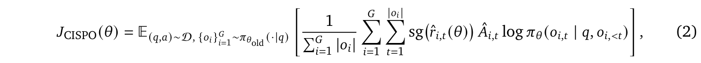
其中 \(G\) 为每个提示的 rollout 轨迹数量，\(|o_i|\) 为轨迹 \(i\) 的 token 长度，\(\mathrm{sg}(\cdot)\) 表示阻止 gradient 经过重要性权重传播的 stop-gradient 算子。
重要性采样比值采用非对称裁剪：
上界 \(1+\epsilon_{\mathrm{high}}^{\mathrm{IS}}\) 防止过大的策略更新，而零下界允许对当前策略下变得不太可能的行动激进地下调权重。
对裁剪后比值使用 stop-gradient，确保重要性权重调节 gradient 幅度时不会引入二阶项，从而得到稳定的一阶更新规则。
优势估计通过带轨迹级基线的 reward-to-go 计算：
其中 \(r_p\) 为步骤 \(p\) 的复合奖励（下文定义），\(B_i\) 为在轨迹 \(i\) 上计算、用于降低方差的基线。
对于可能长达 192K token、含数千个中间行动的 agent 轨迹，标准的结果奖励不足以进行信用分配。我们设计了包含三个组成部分的复合奖励框架。
过程奖励。我们分配密集的中间奖励，针对整个轨迹中的特定行为模式，包括对语言混用与工具调用格式错误的惩罚，以及对结构良好的中间推理步骤的奖励。这些过程奖励为每个 \((s_t,a_t)\) 对提供细粒度监督信号，相比稀疏、仅针对结果的反馈，显著提高信用分配粒度。
任务完成时间奖励。传统 RL 目标仅优化正确性，忽视执行效率。对于 agent 任务，由于工具执行串行或并行的差别及 sub-agent 调用开销，功能等效的轨迹在实际耗时上可能差别巨大。我们将相对完成时间纳入显式奖励：
其中 \(h(\cdot)\) 为单调递减的塑形函数，\(T_{\mathrm{completion}}\) 为 rollout 的实际耗时，\(T_{\mathrm{baseline}}\) 为参考完成时间。这激励策略发现并利用并行机会，生成正确且高效的解答。
带基线的 reward-to-go。为降低长时程任务中的 gradient 方差，我们采用 reward-to-go 形式：
结合轨迹级基线，这一形式将 gradient 信号集中于后果尚未计入的行动，提高信用分配精度并稳定优化。
每个步骤的复合奖励为：
其中 \(\alpha\) 和 \(\beta\) 是系数，用于平衡密集行为反馈、效率激励与主要任务性能信号。
训练通用 agent 的关键挑战，是避免任务专属优化与广泛能力保留之间的权衡。单领域 RL 训练——仅在
（接上页）agent 任务上微调——有导致模型基础推理和通用知识能力灾难性遗忘的风险。相反，跨领域顺序多阶段训练会引起负迁移，因为一个领域的增益会侵蚀此前训练领域的性能。
我们采用混合领域 RL 训练策略，同时解决两个问题。训练经过多个阶段，每个阶段内同时从推理、编程、agent 与通用四个领域抽取训练数据。这种联合优化确保每个训练步骤的策略 gradient 更新均由多样任务分布指导，防止优化器过拟合任一领域的奖励景观。
跨阶段，我们系统地调整三个维度：
这种混合领域策略产生叠加收益：同时改善模型基础推理能力、所有目标领域的任务专属质量及端到端用户体验，因为实际部署的 agent 会遇到涵盖全部四个领域的异构请求组合。
大规模训练 RL agent 要求同时满足三个本质上存在张力的目标，即“不可能三角”：
我们将基础设施优化目标形式化为最大化有效 agent 训练收益：
这三个目标中，每对都产生特定工程张力。在异构 agent rollout 时间（从几秒至几小时）下最大化吞吐量，与为稳定训练维持分布一致性存在冲突。支持任意 agent 架构，与高效数据处理所需 agent 状态和训练逻辑紧耦合存在冲突。在长时程轨迹（最长 192K token）中实现稳定信用分配，与偏向短、简单任务的吞吐量最优调度存在冲突。Forge 基础设施通过下述架构与算法设计解决这些张力。
Forge 系统组织为三个解耦模块，通过中间件抽象层连接（图 4）。该架构直接落实前一小节描述的 agent RL 建模：在模型生成接口处划定的策略与环境边界，映射为训练/推理侧与 agent 侧的边界。
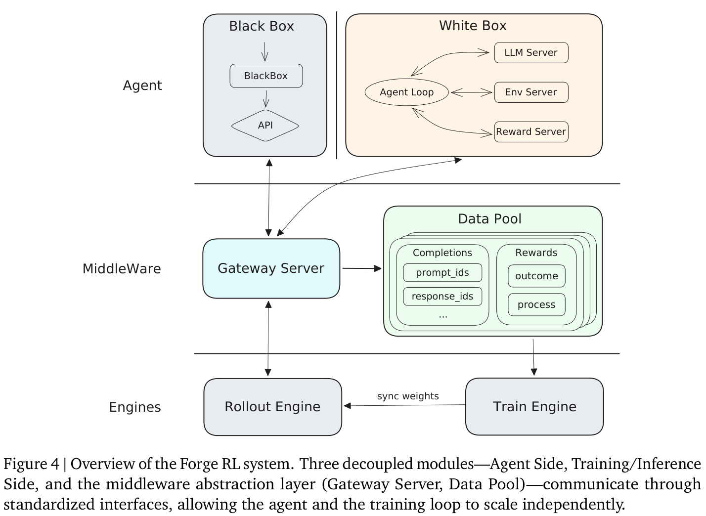
Agent 侧。该模块封装任意 agent 实现，编排其与外部环境的交互。agent 侧作为纯轨迹生产者，完全不感知训练和推理机制。它驱动 MDP 形式化中定义的环境动态——执行工具调用、管理上下文与访问记忆——并记录产生的 \((s_t,a_t,o_t)\) 元组，供下游训练消费。
中间件抽象层。两个组件连接 agent 侧与训练侧。Gateway Server 提供标准化通信接口，在
（接上页）agent 与 LLM 引擎之间路由 completion 请求，抽象掉 agent scaffold 的异构性。Data Pool 充当分布式轨迹存储，异步收集 rollout 数据，将生成与训练流水线完全解耦，使二者能够独立扩展。
训练与推理侧。Rollout Engine 处理高吞吐 token 生成，充当响应 Gateway 请求的策略 \(\pi_\theta\)。Train Engine 从 Data Pool 消费处理后的轨迹序列，计算 CISPO 策略 gradient，并将更新权重同步回 Rollout Engine。
前一小节的 MDP 形式化将上下文管理、工具执行和记忆访问定义为环境动态。基础设施必须支持 agent 实现这些动态的两种不同范式，区别在于框架对 agent 内部状态的可见程度。
白盒 agent向训练框架暴露上下文管理逻辑。状态转移 \(s_{t+1}=f_{\mathrm{CM}}(\operatorname{concat}(s_t,a_t,o_t))\) 在框架内部实现，使训练流水线能够直接观察上下文转换操作，并通过这些操作反向传播。这种紧密集成使框架能够构建忠实反映 CM 所诱导分布的训练序列，确保策略在真实推理时状态分布上优化。白盒集成对于具有明确 CM 策略（例如滑动窗口截断、定期摘要）的 agent 尤其有效，框架可以重建精确训练状态。
黑盒 agent将 agent 视为不透明的轨迹生产者。agent 将 completion 请求路由到 RL 服务 Gateway，不暴露内部上下文管理、记忆压缩或多 agent 协调逻辑。框架仅收集外部可见的 \((s_t,a_t,o_t)\) 元组，其中 \(s_t\) 是每次 completion 请求时呈现给 LLM 的上下文，并从这些观察构建训练数据。这种非侵入范式支持任意内部架构，包括深度思考循环、激进上下文改写和分层多 agent 系统，无需任何 agent 侧修改即可带来持续改进。
基于 Gateway 的抽象统一了两种范式：白盒 agent 的唯一区别是将 CM 操作注册到框架，以便训练时重建；黑盒 agent 则仅依赖观察到的请求流。此设计已在数百种不同 agent scaffold 和数千种工具调用格式中得到验证。
Agent rollout 完成时间存在极端差异，从简单 API 调用的几秒，到复杂推理链的数小时，在吞吐量和分布一致性之间造成根本张力。严格 FIFO 调度保留数据分布，但会受到慢任务导致的队头（HoL）阻塞。完全贪心调度（获取最先完成的轨迹）最大化吞吐量，却引起严重分布偏移：早期训练 batch 主要由短、简单任务构成，困难任务聚集在后续 batch，导致 gradient 振荡与优化不稳定。
我们提出窗口化 FIFO（图 5），一种在两种极端之间插值的混合调度策略。给定生成队列 \(Q=[T_0,T_1,\ldots,T_{N-1}]\)，当前队头索引为 \(i\)，训练调度器只能获取滑动窗口 \([T_i,T_{i+W-1}]\) 内的已完成轨迹，其中 \(W\) 是窗口大小（例如 \(W=0.3N\)）。窗口内调度器以贪心方式运行，任何已完成
（接上页）轨迹均可立即获取，缓解 HoL 阻塞。跨窗口边界则强制严格排序：窗口之外的轨迹无论是否完成均被阻塞，仅当窗口队头任务被消费时，窗口才向前移动。
这提供了由 \(W\) 控制的可调权衡：较小值接近严格 FIFO（最大分布一致性），较大值接近贪心调度（最大吞吐量）。实践中，\(W=0.3N\) 在大幅减少集群空闲时间的同时，维持接近 FIFO 的分布性质。
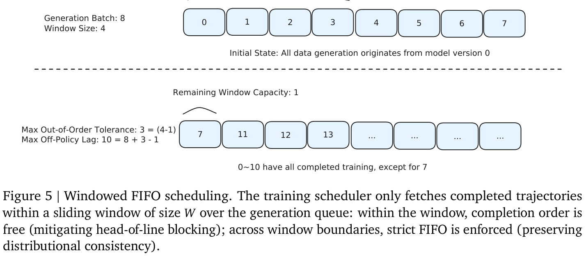
在多轮 agent 轨迹中，顺序消息追加与上下文管理操作，在同一 rollout 组内的训练样本之间产生大量共享前缀。传统训练独立处理每个样本，重复计算共同前缀，在长上下文 agent 场景中尤为浪费。
我们提出前缀树合并（图 6），将训练计算从线性样本处理重构为树状计算。具有共同前缀的多个 completion 合并为单个前缀树：共享前缀在前向传播中仅计算一次，此后计算分支至各个回答片段。前向传播后，利用存储的元数据拆解树，并对每个样本独立计算 loss。
此重构与独立样本训练在数学上等价：共享前缀上的因果 attention 计算，无论执行一次还是 \(k\) 次，均产生完全相同的激活，因此保证零近似误差。实践中，前缀树合并实现最高 40× 的训练加速，并相应降低内存消耗，在不损害训练保真度的情况下支持更长序列和更大 batch。
我们采用三项架构优化，最大化 agent RL rollout 的生成吞吐量。
基于 MTP 的 speculative decoding。多 token 预测（MTP）模块持续与
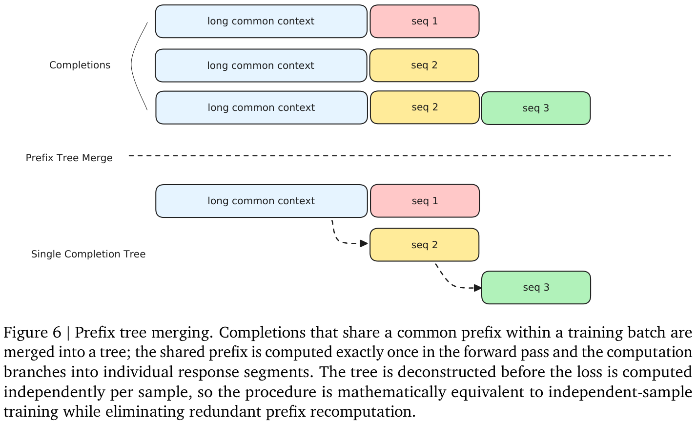
（接上页）RL 策略通过 top-\(K\) KL 散度 loss 共同训练。这种共同训练确保在非平稳 RL 优化过程中，草稿接纳率始终较高，防止策略演进时本可能降低 speculative decoding 性能的分布偏移。
异构 prefill–decode 分离。Prefill 和 decode 操作解耦为独立调度的实例，消除 MoE 架构中混合调度产生的相互干扰。各阶段采用针对自身计算特征优化的并行策略，同时最大化全局吞吐量并最小化尾延迟。
全局 L3 KV cache 池。由分布式文件系统（DFS）支撑的分布式全局 KV cache，通过组级 rollout 调度最大化前缀缓存命中率。成本感知请求路由器动态平衡排队延迟与缓存迁移成本，在避免单个实例过载的同时最大化缓存局部性，并避免 agent RL 特有多轮交互中的重复 prefill。
LLM agent 必须编排自然语言推理与代码执行、网页浏览和 API 调用等外部工具调用交替发生的多步工作流。关键设计问题是模型的 chain-of-thought（CoT）应如何与工具使用轮次交互，以及是否应跨交互轮次保留先前推理状态。在 MiniMax-M2 中，我们将交错思考作为一级 agent 建模原则：模型在单一轨迹中交替进行显式思考与工具执行，将完整推理状态跨轮传递。
交错 chain-of-thought。我们将交错思考定义为一种生成协议，其中模型交替产生推理 token \(r_t\) 与行动 token \(a_t\)：
其中 \(o_t\) 表示执行行动 \(a_t\) 后返回的观察（工具输出）。每个推理片段 \(r_t\) 以完整历史 \((r_1,a_1,o_1,\ldots,r_{t-1},a_{t-1},o_{t-1})\) 为条件，使模型能够在选择下一行动前修改计划、更新假设并纳入新证据。这不同于两种常见替代方式：（1）前置推理，所有推理 token 均在任何行动之前产生，无法适应中间观察；（2）无状态的逐轮推理，在生成 \(r_t\) 前从上下文移除先前推理 token \(r_{<t}\)，使模型无法建立在早先分析之上。
推理状态持久保留。使交错思考成为可能的关键架构决策，是将第 \(t\) 轮完整模型输出（包括全部思考块）追加到消息历史，并作为第 \(t+1\) 轮上下文提供。令 \(\mathcal H_t\) 表示第 \(t\) 轮对话历史。在推理状态持久保留下：
丢弃推理状态时，历史退化为 \(\mathcal H_{t+1}^{(\mathrm{drop})}=\mathcal H_t\oplus[\operatorname{assistant}(a_t)]\oplus[\operatorname{tool}(o_t)]\)，迫使模型每轮重新推导上下文、约束和部分结论，导致累积状态漂移和自我纠错能力下降。
Plan-Act-Reflect 循环。交错思考在每一轮 \(t\) 将结构化认知循环落实为：（1）Plan（计划）：模型回顾先前推理与观察积累的状态，然后制定或完善策略；（2）Act（行动）：模型选择并执行基于计划的工具调用；（3）Reflect（反思）：模型对照预期评估观察，更新世界模型，确定是修改计划还是继续。这一循环通过反思意外观察实现自我纠错，通过复用而非重新推导假设与中间结论提升样本效率，并通过可解释推理轨迹提高可调试性。图 7 展示此过程。
推理状态持久保留的影响。我们在每次模型调用前移除此前轮次的思考块，以对推理状态持久保留进行消融，结果显示在各 agent 基准上均有一致增益，尤其在深度搜索和软件工程等需要延长的多步推理任务上改善很大，表明任务需要跨多步持续规划与迭代完善时，交错思考最具影响。
我们详细说明模型训练向自我演化的转变。这不是突如其来的飞跃，而是 M2 系列 agent 能力稳步增长的结果：从常规调试与报告任务，发展到由 M2.7 主动推动自身迭代开发的完全集成流水线（图 8）。
为将其落地，我们开发了模型迭代系统（图 8A），遵循人类掌舵、模型构建的原则。研究者配置目标，通过聊天指导 agent，并审查输出以决定下一步。agent 在“Agent Harness”内工作，这是完全由内部 M2.7 模型生成、没有任何人类编写代码的工作空间。该框架为模型配备支持行动串联的分层 skill、持久记忆、安全护栏与评估基础设施。
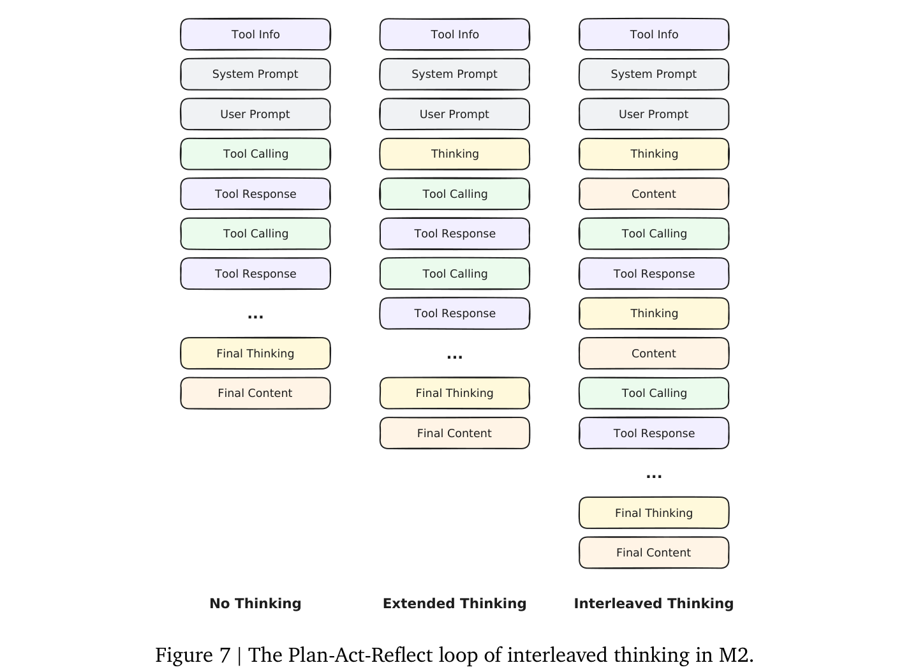
实践中，我们的 RL 团队通过动态双循环工作流使用该系统（图 8B）。在由人类主导的实验规划之后，M2.7 进入自主执行阶段，分析正在进行的运行、读取日志并诊断指标异常。模型通过自动调试代码和调整配置，直接干预训练循环，承担每日迭代工作量的 30% 至 50%。人类审查触发重大迭代决策，而 agent 可在审查之间自动继续有界分析。
最终，该系统实现 scaffold 的递归升级。在优化内部编程 scaffold 的任务中，M2.7 执行了完全自主的 100 轮迭代循环：分析失败、修改代码和评估修改。这一探索引入循环检测等机制，并发现更好的参数组合，使内部评估性能提高 30%，表明模型能够改善塑造其后续迭代的基础设施。
我们在三个体现 M2 系列设计重点的能力领域，对比 MiniMax-M2.7 与公开部署的最强闭源前沿推理模型——Claude Opus 4.6、Claude Sonnet 4.6（Anthropic, 2025）、GPT 5.4（OpenAI, 2025）和 Gemini 3.1 Pro（Google DeepMind, 2025）：agent 编程、agent 协作工作（搜索、多工具 agent 和工作空间操作），以及推理与知识。为明确展示系列内演进，我们还报告上一个公开版本 MiniMax-M2.5 的得分。整个评估中，我们有意优先选择
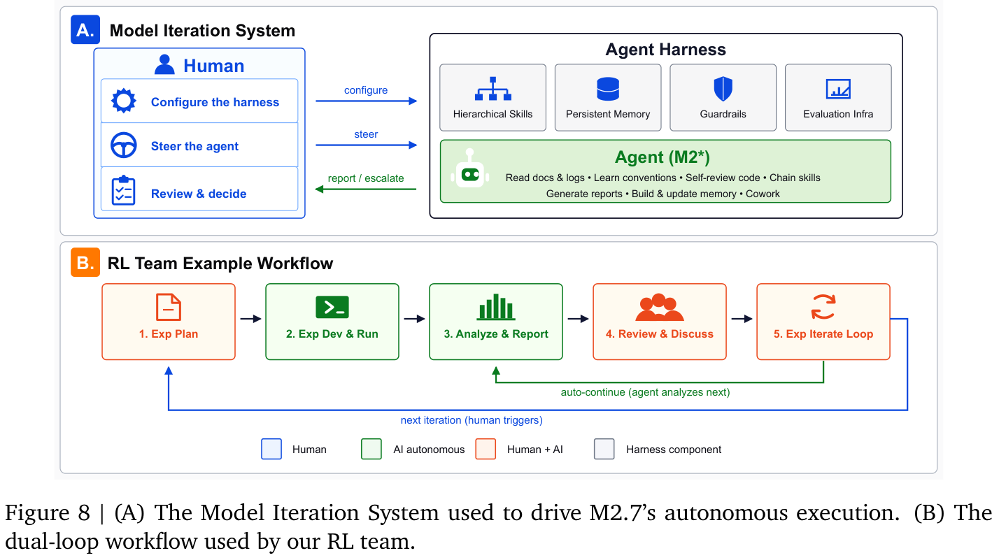
（接上页）锻炼长时程、以环境为依据行为的基准，而非封闭式问答，因为这些正是 M2 数据流水线和 Forge RL 系统明确针对的场景。
模型与推理模式。每个闭源基线均以最强推理配置评估：Claude Opus 4.6 和 Claude Sonnet 4.6 使用 extended thinking，GPT 5.4 与 Gemini 3.1 Pro 使用 high reasoning effort。M2.7 和 M2.5 开启思考，采用第 7.1 节描述的交错思考轨迹协议。除非另有说明，生成使用 temperature 1.0 和 top-p 0.95；在 agent 基准上，所有模型共享相同 scaffold 和工具环境。
基准。我们将报告的基准组织为五组：
（接上页）异构工具使用；MM Claw 是内部多模态 office-claw 基准；MEWC v2 是从 Microsoft Excel World Championship 题库抽取 100 道题构成的内部困难任务子集；Finance Modeling Pro 是内部以 Excel 为依据、由专家量规评分的金融建模套件。
评估配置。SWE-bench Pro、SWE-bench Multilingual、Multi-SWE-bench 和 NL2Repo 在内部基础设施上运行；除 GPT 5.4 使用原生 CodeX scaffold 外，所有模型均以 Claude Code 作为统一 scaffold（覆盖默认系统提示词），结果取 4 次试验平均。Terminal-Bench 2.0 使用 8 vCPU / 16 GB 沙盒，实际耗时上限 2 小时，采用 Terminus-2 XML scaffold 与经过验证的 2.0 数据集（HuggingFace zai-org/terminal-bench-2-verified）；每个模型 4 次试验，未重新评估的基线得分引用官方报告。MLE Bench Lite 将每个比赛（共 22 个）放在单 A30 沙盒中，采用内部自我演化 scaffold（Bash + WebSearch）运行 24 小时；各任务评分选取最佳验证 checkpoint，报告测试集奖牌率；最终数值为 3 次独立 24 小时试验的均值。VIBE-Pro 通过容器化部署端到端运行，使用 Claude Code 验证交互逻辑与视觉保真度，取 3 次试验平均。HyperTask、MM Claw、MEWC v2 和 Finance Modeling Pro 使用专家定义量规，进行 3 次试验评分。BrowseComp、Wide Search 和 RISE 共享 WebExplorer（Liu et al., 2025b）agent 框架，仅轻微修改系统提示词与工具描述；token 使用量超过最大上下文的 30% 时，丢弃全部 assistant 回复与工具返回，以保持搜索继续。RISE 额外启用基于 Playwright 的浏览器工具。GDPval-AA 是 Artificial Analysis 在 OpenAI 开放 GDPval 数据集上的重新评估。AIME 2026、GPQA-Diamond、SciCode、IFBench、AA-LCR、HLE 和 MMLU-Pro 按 Artificial Analysis Index v4.0 协议评估，不使用工具、仅单次采样（pass@1）。
表 4 报告 M2.7 与四个闭源前沿基线（Claude Opus 4.6、Claude Sonnet 4.6、GPT 5.4、Gemini 3.1 Pro）的比较。纳入上一公开 M2 版本（M2.5）作为系列内部参考。每行最佳分数以粗体标出；“–”表示该模型未报告我们 scaffold 下的得分，或写作时尚未发布该基准结果。
软件工程与编程 agent。M2.7 在整个 agent 编程套件中总体具有竞争力。在 SWE-bench Pro 上得分 56.2，在 SWE-bench Multilingual 上得分 76.5，以 52.7 在 Multi-SWE-bench 上取得参与比较模型中的最高分，在 Terminal-Bench 2.0 上达到 57.0。在 NL2Repo 上，M2.7 达到 39.8，比 M2.5（26.6）跃升 13 分，反映了第 4.1 节引入的新全栈仓库数据效果。MLE Bench Lite 上，M2.7 奖牌率达到 66.6%，相比 M2.5 绝对提升 15 个百分点；第 8.3 节详细讨论该案例。
应用开发。M2.7 在 VIBE-Pro 上达到 55.6，与领先闭源基线相当。在更困难的长时程 HyperTask 套件上，M2.7 达到 67.6，比 M2.5 提高 8 分。应用开发是最清晰体现 M2 设计主张的领域之一：仅激活约 10B 参数，面向 AppDev 的训练数据和 Agent-as-a-Verifier 奖励（第 4.1 节），便弥合了与每 token 激活参数量高一个数量级的前沿模型之间的大部分差距。
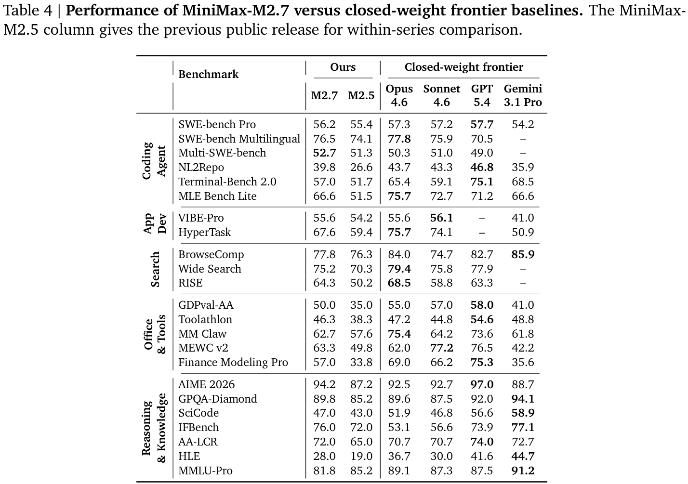
协作工作——搜索与深度研究。在开放网络搜索与综合的三个基准上，M2.7 在 BrowseComp 达到 77.8，在 Wide Search 达到 75.2，在内部 RISE 基准达到 64.3（RISE 设计为需要使用 Playwright 浏览器工具进行非简单的多步浏览和跨来源印证）。RISE 也是此组中系列内部增益最大的基准，从 M2.5（50.2）提高 14 分。M2.7 在要求更长规划时程和更丰富网页交互的任务上最具竞争力，这与用于构建深度搜索训练语料的验证器驱动数据流水线（第 4.2 节），以及跨多轮交错思考的持久推理状态（第 7.1 节）一致。
协作工作——agent、办公与工作空间。在异构工具使用基准上，M2.7 在 GDPval-AA 达到 50.0，在 Toolathlon 达到 46.3。在基于 Excel 的操作上，M2.7 在 MEWC v2 达到 63.3，在 Finance Modeling Pro 达到 57.0；在 MM Claw 上达到 62.7。此组体现出 M2 系列各能力领域中最大的系列内部提升空间，M2.5 → M2.7 在基于 Excel 的基准（MEWC v2 +13.5、Finance Modeling Pro +23.2）及 GDPval-AA（+15.0）上均显著提升。
推理与知识。M2.7 在不使用工具、单次采样评估的重推理基准上具有竞争力。在 AIME 2026 上得分 94.2，在 GPQA-Diamond 上为 89.8，在 IFBench 上为 76.0，在 AA-LCR 上为 72.0，在每项基准上均处于前沿区间。IFBench 结果尤其反映了第 4.3 节和第 6 节所述多领域 RL 策略及基于量规的回答筛选。在更广泛的知识基准上，M2.7 在 MMLU-Pro 达到 81.8，在 SciCode 达到 47.0，在 HLE 达到 28.0。
系列内演进。为补充表 4 的跨模型快照，图 9 追踪 M2 系列自身从初版 M2 经 M2.5 到当前 M2.7 的轨迹，
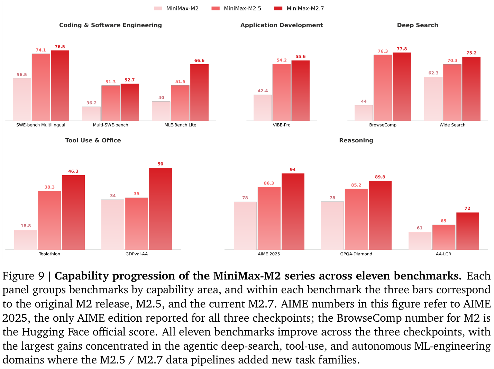
（接上页）限于三个 checkpoint 均在我们 scaffold 下评估过的十一项基准。有两种明显模式。首先，此集合中的每项基准均在三个 checkpoint 间提高，绝对增益从 +11 分（AA-LCR、GPQA-Diamond）到 +33.8 分（BrowseComp）不等。其次，增益大小与第 4 节的数据流水线投入相对应：M2.5 / M2.7 语料引入新任务类别的基准——深度搜索（BrowseComp +33.8、Wide Search +12.9）、工具使用（Toolathlon +27.5、GDPval-AA +16.0）和自主机器学习工程（MLE Bench Lite +26.6）——表现出最陡跃升，而初版 M2 已较强的基准（SWE-bench Multilingual、Multi-SWE-bench）进步更渐进。推理基准（AIME 2025 +16.0、GPQA-Diamond +11.8、AA-LCR +11.0）呈现更平稳曲线，与推理数据流水线的多维度扩展一致。综合来看，该图表明 M2 系列的三个贡献维度——agent 数据、Forge RL 系统（第 6 节）和自我演化（第 7.2 节）——在每次发布中均转化为稳定改进轨迹，而非集中于单个 checkpoint。
表 4 的 MLE Bench Lite 结果，是第 7.2 节所述系统设计对应自我演化能力的最直接证据。底层驱动力是 M2.7 在机器学习工程（MLE）上的实力：在 OpenAI MLE Bench Lite（Chan et al., 2025）上，M2.7 与 Gemini 3.1 Pro 持平，展示了独立编排 ML 流水线和修改自身训练 scaffold 所需的前沿水平能力。
为在受控设置下测试此能力，我们让 M2.7 作为独立机器学习工程师，评估 MLE Bench Lite 中的 22 项比赛。虽然计算较轻量，这些任务覆盖标准 ML 工作流全部阶段。
为指导模型，我们实现了由短期记忆和自反馈驱动的简单自主运行框架，框架本身不含人类编写代码。完成一次迭代后，agent 编写记忆文件并进行严格自我批评。这种自我反思式批评为后续运行建立明确优化方向，使模型能够在积累的反馈链之上继续改进。
我们执行三次独立试验，每次允许 24 小时迭代演化。如图 10 所示，M2.7 展示明显的累积改进，奖牌率随时间稳步提高。最佳运行获得 9 枚金牌、5 枚银牌和 1 枚铜牌。M2.7 在各试验中的平均奖牌率为 66.6%，与 Gemini 3.1 Pro 持平，展示自主探索并优化复杂端到端 ML 流水线的能力。
我们强调这一案例，不仅因为数值结果，也因为定性观察：M2.7 愿意调试自身训练 scaffold、修改配置文件并迭代数百轮，这些行为闭合了 M2 系列所围绕设计的“极少激活参数 → 最大现实世界智能”循环。
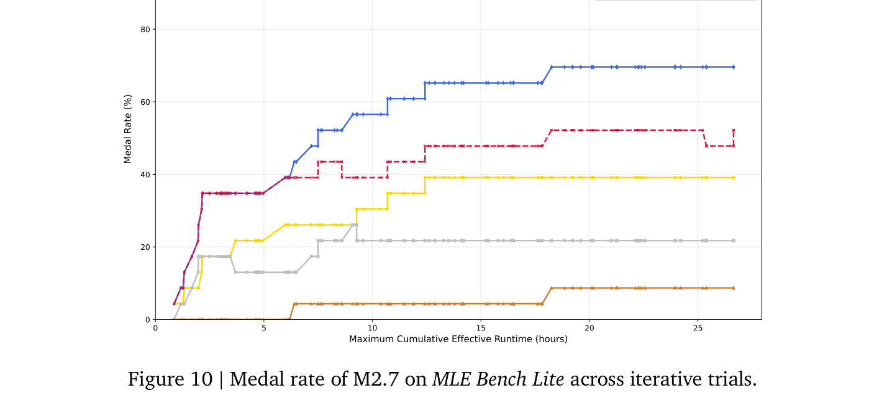
我们介绍了 MiniMax-M2 系列，这是一组 MoE 语言模型，围绕极少激活参数可以释放最大现实世界智能这一主张构建。旗舰 M2 将 9.8B 激活参数 / 229.9B 总参数骨干与三个从 M2 经 M2.5 到当前 M2.7 checkpoint 协同演进的组件结合：由 agent 驱动的数据流水线，将每条训练轨迹植根于可执行工作空间与产物对齐奖励；Forge，原生面向 agent 的 RL 系统，跨白盒与黑盒 Agent Loop 扩展长时程训练；以及早期可运行的自我演化形式，由 M2.7 自主调试自身训练运行并修改 agent scaffold。这些组件共同将约 10B 激活参数的开销转化为与
（接上页）在 agent 编程、agent 协作工作及推理与知识基准上，与单步计算量大一个数量级的前沿系统相当。我们将这些结果视为更长发展轨迹中的一步：每个维度——数据、RL 系统和自我演化——都远未饱和，后续 M2.x checkpoint 将继续协同扩展三者。
Joshua Ainslie, James Lee-Thorp, Michiel de Jong, Yury Zemlyanskiy, Federico Lebrón, and Sumit Sanghai. GQA：从多头 checkpoint 训练广义多 query transformer 模型。 收录于《2023 年自然语言处理经验方法会议论文集》， 2023.
Anthropic. Claude Opus 4.6 与 Sonnet 4.6 模型卡。 https://www.anthropic.com/news/claude-4-6, 2025.
Yushi Bai, Xin Lv, Jiajie Zhang, Hongchang Lyu, Jiankai Tang, Zhidian Huang, Zhengxiao Du, Xiao Liu, Aohan Zeng, Lei Hou, Yuxiao Dong, Jie Tang, and Juanzi Li. LongBench：用于长上下文理解的双语、多任务基准。 收录于《计算语言学协会第 62 届年会论文集（第 1 卷：长论文）》， 2024.
Victor Barres, Honghua Dong, Soham Ray, Xujie Si, and Karthik Narasimhan. τ2-Bench：在双重控制环境中评估对话 agent， 2025.
Iz Beltagy, Matthew E. Peters, and Arman Cohan. Longformer：长文档 transformer， 2020.
Jun Shern Chan, Neil Chowdhury, Oliver Jaffe, James Aung, Dane Sherburn, Evan Mays, Giulio Starace, Kevin Liu, Leon Maksin, Tejal Patwardhan, Lilian Weng, and Aleksander Madry. MLE-bench：在机器学习工程上评估机器学习 agent， 2025.
Aili Chen, Chi Zhang, Junteng Liu, Jiangjie Chen, Chengyu Du, Yunji Li, Ming Zhong, Qin Wang, Zhengmao Zhu, Jiayuan Song, et al. Dive：扩展 agent 任务合成的多样性，实现可泛化的工具使用。 arXiv 预印本 arXiv:2603.11076, 2026.
Kaiyuan Chen et al. xbench：通过与专业工作对齐的真实评估跟踪 agent 生产力扩展， 2025.
Mark Chen, Jerry Tworek, Heewoo Jun, Qiming Yuan, Henrique Ponde de Oliveira Pinto, Jared Kaplan, Harri Edwards, Yuri Burda, Nicholas Joseph, Greg Brockman, et al. 评估在代码上训练的大语言模型， 2021.
François Chollet. 论智能的度量， 2019.
Peter Clark, Isaac Cowhey, Oren Etzioni, Tushar Khot, Ashish Sabharwal, Carissa Schoenick, and Oyvind Tafjord. 认为你已经解决问答了吗？试试 ARC——AI2 推理挑战， 2018.
Damai Dai, Chengqi Deng, Chenggang Zhao, R. X. Xu, Huazuo Gao, Deli Chen, Jiashi Li, Wangding Zeng, Xingkai Yu, Y. Wu, Zhenda Xie, Y. K. Li, Panpan Huang, Fuli Zhao, Xiaodong Sun, Aixin Liu, and Wenfeng Liang. DeepSeekMoE：迈向 MoE 语言模型中的极致专家专业化。 收录于《计算语言学协会第 62 届年会论文集（第 1 卷：长论文）》， 2024.
DeepSeek-AI. DeepSeek-V3 技术报告， 2024.
Fabian Gloeckle, Badr Youbi Idrissi, Baptiste Rozière, David Lopez-Paz, and Gabriel Synnaeve. 通过多 token 预测实现更好、更快的大语言模型。 收录于《第 41 届国际机器学习会议论文集》， 2024.
Google DeepMind. Gemini 3.1 Pro。 https://deepmind.google/technologies/gemini/, 2025.
Dan Hendrycks, Collin Burns, Steven Basart, Andy Zou, Mantas Mazeika, Dawn Song, and Jacob Steinhardt. 衡量大规模多任务语言理解。 收录于《国际学习表征会议》， 2021a.
Dan Hendrycks, Collin Burns, Saurav Kadavath, Akul Arora, Steven Basart, Eric Tang, Dawn Song, and Jacob Steinhardt. 使用 MATH 数据集衡量数学解题能力。 收录于《神经信息处理系统会议数据集与基准专题论文集》， 2021b.
Cheng-Ping Hsieh, Simeng Sun, Samuel Kriman, Shantanu Acharya, Dima Rekesh, Fei Jia, and Boris Ginsburg. RULER：你的长上下文语言模型实际上下文大小是多少？， 2024.
Yufei Huang et al. Toolathlon：LLM agent 的异构工具使用基准， 2025.
Carlos E. Jimenez, John Yang, Alexander Wettig, Shunyu Yao, Kexin Pei, Ofir Press, and Karthik Narasimhan. SWE-bench：语言模型能否解决真实 GitHub issue？ 收录于《国际学习表征会议》， 2024.
Yaniv Leviathan, Matan Kalman, and Yossi Matias. 通过 speculative decoding 实现 transformer 快速推理。 收录于《第 40 届国际机器学习会议论文集》， 2023.
Hongru Liu et al. Wide Search：对长时程、多来源网络研究进行基准评估， 2025a.
Junteng Liu, Yunji Li, Chi Zhang, Jingyang Li, Aili Chen, Ke Ji, Weiyu Cheng, Zijia Wu, Chengyu Du, Qidi Xu, et al. WebExplorer：通过探索与演化训练长时程网络 agent。 arXiv 预印本 arXiv:2509.06501, 2025b.
Xianzhen Luo, Jingyuan Zhang, Shiqi Zhou, Rain Huang, Chuan Xiao, Qingfu Zhu, Zhiyuan Ma, Xing Yue, Yang Yue, Wencong Zeng, and Wanxiang Che. CVE-Factory：扩展面向代码安全漏洞的专家级 agent 任务， 2026.
Kaijing Ma, Xinrun Du, Yunran Wang, Haoran Zhang, Zhoufutu Wen, Xingwei Qu, Jian Yang, Jiaheng Liu, Minghao Liu, Xiang Yue, Wenhao Huang, and Ge Zhang. KOR-Bench：在与知识正交的推理任务上评估语言模型， 2025.
Mathematical Association of America. 2025 年美国数学邀请赛。 https://www.maa.org/math-competitions/aime, 2025.
Mathematical Association of America. 2026 年美国数学邀请赛。 https://www.maa.org/math-competitions/aime, 2026.
Mike A. Merrill, Alexander Glenn Shaw, Nicholas Carlini, et al. Terminal-Bench：在命令行界面的困难真实任务上评估 agent。 收录于《国际学习表征会议》， 2026.
Grégoire Mialon, Clémentine Fourrier, Thomas Wolf, Yann LeCun, and Thomas Scialom. GAIA：通用 AI 助手基准。 收录于《国际学习表征会议》， 2024.
MiniMax. MiniMax-M1：使用 lightning attention 高效扩展测试时计算， 2025a.
MiniMax. MiniMax-01：使用 lightning attention 扩展基础模型， 2025b.
MiniMax AI. 深入解析 MiniMax-M2-Her。 https://x.com/MiniMax_AI/status/2016521115355799660, 2026.
Catherine Olsson, Nelson Elhage, Neel Nanda, Nicholas Joseph, Nova DasSarma, Tom Henighan, Ben Mann, Amanda Askell, Yuntao Bai, Anna Chen, et al. 上下文学习与 induction heads， 2022.
OpenAI. 介绍 GPT-5。 https://openai.com/gpt-5/, 2025.
Tejal Patwardhan, Rachel Dias, Elizabeth Proehl, Grace Kim, Michele Wang, Olivia Watkins, Simón Posada Fishman, Marwan Aljubeh, Phoebe Thacker, Laurance Fauconnet, Natalie S. Kim, Patrick Chao, Samuel Miserendino, Gildas Chabot, David Li, Michael Sharman, Alexandra Barr, Amelia Glaese, and Jerry Tworek. GDPval：在具有经济价值的真实任务上评估 AI 模型性能， 2025.
Long Phan, Alice Gatti, Ziwen Han, Nathaniel Li, Josephina Hu, et al. 人类最后的考试， 2025.
Valentina Pyatkin et al. IFBench：探测严格约束下可验证的指令遵循， 2025.
Zhen Qin, Weigao Sun, Dong Li, Xuyang Shen, Weixuan Sun, and Yiran Zhong. Lightning Attention-2：大语言模型处理无限序列长度的免费午餐。 收录于《第 41 届国际机器学习会议论文集》， 2024.
Layla El Rashid et al. SWE-bench Multilingual：在 Python 之外评估编程 agent， 2025.
David Rein, Betty Li Hou, Asa Cooper Stickland, Jackson Petty, Richard Yuanzhe Pang, Julien Dirani, Julian Michael, and Samuel R. Bowman. GPQA：研究生级、无法仅靠 Google 搜索解决的问答基准。 收录于《语言建模会议》， 2024.
Noam Shazeer, Azalia Mirhoseini, Krzysztof Maziarz, Andy Davis, Quoc V. Le, Geoffrey E. Hinton, and Jeff Dean. 极其庞大的神经网络：稀疏门控 MoE 层。 收录于《国际学习表征会议》， 2017.
Jianlin Su, Murtadha Ahmed, Yu Lu, Shengfeng Pan, Wen Bo, and Yunfeng Liu. RoFormer：通过旋转位置 embedding 增强 transformer。 Neurocomputing, 568, 2024.
Mirac Suzgun, Nathan Scales, Nathanael Schärli, Sebastian Gehrmann, Yi Tay, Hyung Won Chung, Aakanksha Chowdhery, Quoc V. Le, Ed H. Chi, Denny Zhou, and Jason Wei. 具有挑战性的 BIG-Bench 任务，以及 chain-of-thought 能否解决它们。 收录于《计算语言学协会研究成果：ACL 2023》， 2023.
Garrett Tanzer, Mirac Suzgun, Eline Visser, Dan Jurafsky, and Luke Melas-Kyriazi. 从一本语法书学习翻译新语言的基准， 2024.
Minyang Tian, Luyu Gao, Shizhuo Dylan Zhang, Xinan Chen, Cunwei Fan, Xuefei Guo, Roland Haas, Pan Ji, Kittithat Krongchon, Yao Li, Shengyan Liu, Di Luo, Yutao Ma, Hao Tong, Kha Trinh, Chenyu Tian, Zihan Tian, Yufeng Wang, Xinyuan Wu, Hao Tianci You, Boxuan Yuan, Qihang Zhang, Lvyou Zhao, Yingdong Zhao, Yujie Zhao, Zhiwei Zhao, Yu Wang, Tina Liu, Hongru Liu, Curtis Eckart, et al. SciCode：由科学家整理的研究编程基准， 2024.
Lean Wang, Huazuo Gao, Chenggang Zhao, Xu Sun, and Damai Dai. 无需辅助 loss 的 MoE 负载均衡策略， 2024a.
Yubo Wang, Xueguang Ma, Ge Zhang, Yuansheng Ni, Abhranil Chandra, Shiguang Guo, Weiming Ren, Aaran Arulraj, Xuan He, Ziyan Jiang, Tianle Li, Max Ku, Kai Wang, Alex Zhuang, Rongqi Fan, Xiang Yue, and Wenhu Chen. MMLU-Pro：更稳健、更具挑战性的多任务语言理解基准。 收录于《神经信息处理系统进展》， 2024b.
Yuxuan Wang et al. SWE-bench Pro：工业级仓库级软件工程基准， 2025.
Jason Wei, Yifan Sun, Anastasia Karina, Tejal Patwardhan, Mark Chen, and Amelia Glaese. BrowseComp：浏览 agent 的简单而有挑战性的基准， 2025.
Wenhao Wu, Yizhong Wang, Guangxuan Xiao, Hao Peng, and Yao Fu. Retrieval head 对长上下文事实性给出机制解释， 2024.
Guangxuan Xiao, Yuandong Tian, Beidi Chen, Song Han, and Mike Lewis. 采用 attention sink 的高效流式语言模型。 收录于《国际学习表征会议》， 2024.
John Yang, Kilian Lee, Kilian Lieret, Shunyu Yao, Yujia Xie, Alexander Wettig, Ofir Press Yao Liu, Carlos E. Jimenez, Omar Khattab, Sean Yan, et al. SWE-Smith：扩展软件工程 agent 的数据， 2024.
Howard Yen, Tianyu Gao, Minmin Hou, Ke Ding, Daniel Fleischer, Peter Izsak, Moshe Wasserblat, and Danqi Chen. HELMET：如何有效且全面地评估长上下文语言模型， 2024.
Daoguang Zan et al. Multi-SWE-bench：解决 issue 的多语言基准， 2025.
Peilin Zhou, Bruce Leon, Xiang Ying, Can Zhang, Yifan Shao, Qichen Ye, Dading Chong, Zhiling Jin, Chenxuan Xie, Meng Cao, Yuxin Gu, Sixin Hong, Jing Ren, Jian Chen, Chao Liu, and Yining Hua. BrowseComp-ZH：对大语言模型的中文网页浏览能力进行基准评估， 2025.
本报告贡献者按字母顺序列出如下：
Aili Chen, Aonian Li, Baichuan Zhou, Bangwei Gong, Binyang Jiang, Boji Dan, Changhao Zhang, Changqing Yu, Chao Wang, Cheng Ma, Cheng Zhong, Cheng Zhu, Chengjun Xiao, Chengyi Yang, Chengyu Du, Chenyang Zhang, Chi Zhang, Chuangyi Huang, Chunhao Zhang, Chunhui Du, Chunyu Zhao, Congchao Guo, Da Chen, Deming Ding, Dianjun Sun, Dong Li, Dongyu Zhang, Enhui Yang, Fei Yu, Guang Zheng, Guodong Zheng, Guohong Li, Haichao Zhu, Haigang Zhou, Haimo Zhang, Han Ding, Hao Zhang, Haohai Sun, Haolin Lyu, Haonan Lu, Haoyu Wang, Huajie Shi, Huiyang Li, Jiacheng Chen, Jian Zhang, Jiaqi Zhuang, Jiaren Cai, Jiaxin Pan, Jiayao Li, Jiayuan Song, Jichuan Zhang, Jie Wang, Jihao Gu, Jin Zhu, Jingwei Dong, Jingyang Li, Jingyu Zhang, Jingze Zhuang, Jinhao Tian, Jinli Liu, Jinyi Hu, Jun Tao, Jun Zhang, Junbin Ruan, Junhao Xu, Junjie Yan, Junteng Liu, Junxian He, Kang Xu, Ke Ji, Ke Yang, Kecheng Xiao, Keyu Duan, Keyu Li, Le Han, Letian Ruan, Li Yuan, Lianfei Yu, Liheng Feng, Lijie Mo, Lin Li, Linge Du, Lingye Bao, Lingyu Yang, Lingyuan Zhou, Loki, Lu Chen, Lunbin Zeng, Ming Li, Ming Zhong, Mingliang Tao, Mingyuan Chi, Mujie Lin, Nan Hu, Ningxin Chen, Peiyin Zhu, Peng Gao, Pengcheng Gao, Pengfei Li, Penglin Li, Pengyu Zhao, Qibin Ren, Qibing Ren, Qidi Xu, Qihan Ren, Qile Li, Qin Wang, Quanliang Chen, Qunhong Zeng, Rong Tian, Rongxin Guo, Rui Dong, Ruitao Leng, Ruize Zhang, Shanqi Liu, Shaoxiang Chen, Shaoyu Chen, Sheng Jia, Shun Yao, Shuoran Zhao, Shuqi Yu, Sichen Li, Sicheng Pan, Songquan Zhu, Tengfei Li, Tian Xie, Tiancheng Qin, Tianle Li, Tianrun Liang, Wei Liu, Weiqi Xu, Weitao Li, Weixiang Chen, Weiyu Cheng, Weiyu Zhang, Wenhu Chen, Wenqian Zhao, Xiancai Chen, Xiangjun Song, Xiangyuan Wang, Xianzhen Luo, Xiao Luo, Xiao Su, Xiaobo Li, Xiaodong Han, Xiaojie Wu, Xihao Song, Xingyi Han, Xinyu Guan, Xuan Lu, Xun Zou, Xunhao Lai, Xutong Li, Xuyang Shen, Yan Gong, Yan Ma, Yang Jiao, Yang Wang, Yang Xu, Yangsen Wang, Ye Tang, Yicheng Chen, Yihang Wang, Yinran Qiu, Yiqi Shi, Yiting Guo, Yiwen Huang, Yixuan Wang, Yongyi Hu, Yu Gao, Yu Zhang, Yuan Li, Yuanxiang Ying, Yuanzhen Zhang, Yubo Wang, Yuchen Song, Yufeng Yang, Yuhang Meng, Yuhang Miao, Yuhao Li, Yujie Liu, Yulin Hu, Yunan Huang, Yunji Li, Yunyi Huang, Yusen Zhang, Yusu Hong, Yutao Xie, Yutong Zhang, Yuwen Liao, Yuxuan Shi, Yuze Wenren, Zebin Li, Zehan Li, Zejian Luo, Zeyu Jin, Zeyuan Sun, Zhanpeng Zhou, Zhaochen Su, Zhendong Li, Zhengmao Zhu, Zhengyuan Peng, Zhenhua Fan, Zhi Zhang, Zhichao Xu, Zhiheng Lv, Zhikang Xu, Zhitao He, Zhiwei He, Zhongyuan Li, Zibo Gao, Zijia Wu, Zijian Song, Zijian Zhou, Zijun Sun, Zishan Huang, Ziying Chen, Ziyue Ge